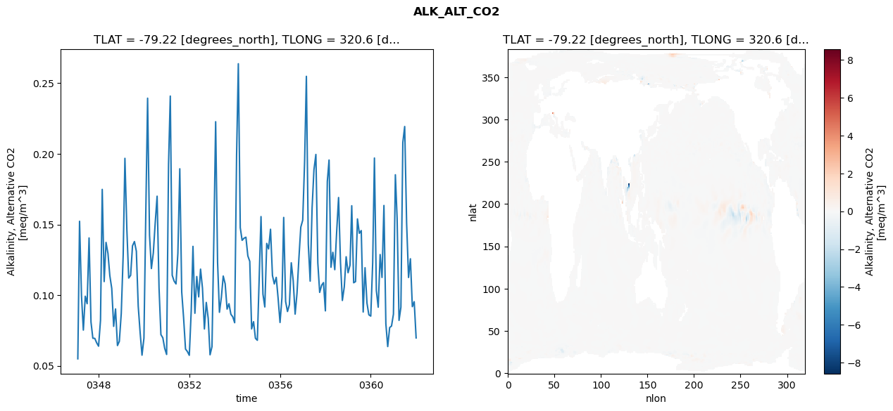
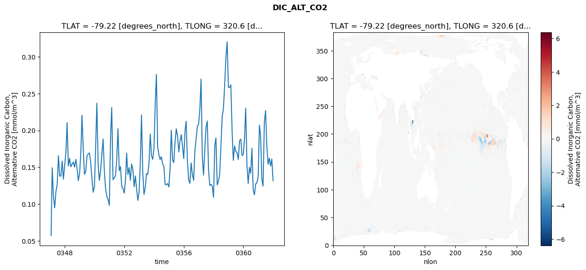
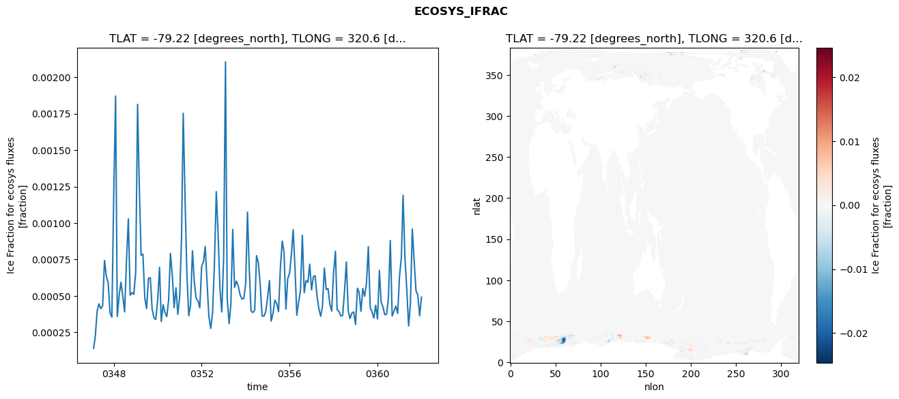
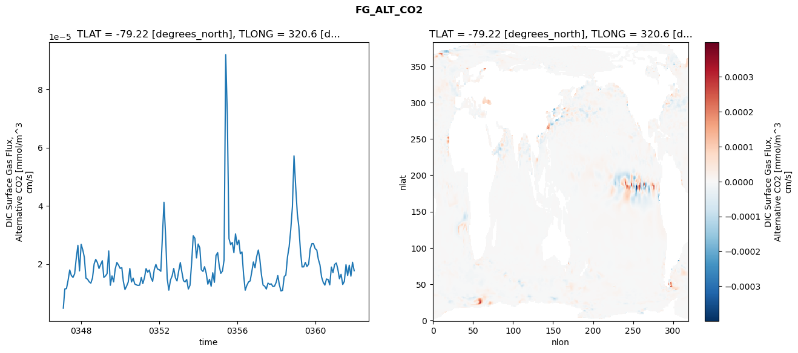

glb-dor_North_Atlantic_basin_024_1999-01-01_00096#
Simulation details#
Case: smyle.cdr-atlas-v0.glb-dor_North_Atlantic_basin_024_1999-01-01_00096.001
Basin: North_Atlantic_basin
Polygon: 24.0
Start date: 1999-01
Show code cell source Hide code cell source
import xarray as xr
import matplotlib.pyplot as plt
Show code cell source Hide code cell source
zarr_store = "/path/to/zarr/store"
# Parameters
zarr_store = "/global/cfs/projectdirs/m4746/Projects/Ocean-CDR-Atlas-v0/data/validation/smyle.cdr-atlas-v0.glb-dor_North_Atlantic_basin_024_1999-01-01_00096.001.validation.zarr"
Show code cell source Hide code cell source
%%time
ds_o = xr.open_zarr(zarr_store).compute()
ds_o
CPU times: user 639 ms, sys: 466 ms, total: 1.1 s
Wall time: 1.32 s
<xarray.Dataset> Size: 2MB
Dimensions: (nlat: 384, nlon: 320, time: 180)
Coordinates:
TLAT float64 8B -79.22
TLONG float64 8B 320.6
ULAT float64 8B -78.95
ULONG float64 8B 321.1
* time (time) object 1kB 0347-02-01 00:00:00 ... 0362-01-01 0...
z_t float32 4B 500.0
Dimensions without coordinates: nlat, nlon
Data variables:
ALK_ALT_CO2_diff (nlat, nlon) float32 492kB nan nan nan ... nan nan nan
ALK_ALT_CO2_rmse (time) float64 1kB 0.05493 0.1523 ... 0.09536 0.06973
DIC_ALT_CO2_diff (nlat, nlon) float32 492kB nan nan nan ... nan nan nan
DIC_ALT_CO2_rmse (time) float64 1kB 0.05697 0.1492 ... 0.1611 0.1316
ECOSYS_IFRAC_diff (nlat, nlon) float32 492kB nan nan nan ... nan nan nan
ECOSYS_IFRAC_rmse (time) float64 1kB 0.000141 0.0002226 ... 0.0004922
FG_ALT_CO2_diff (nlat, nlon) float32 492kB nan nan nan ... nan nan nan
FG_ALT_CO2_rmse (time) float64 1kB 4.873e-06 1.148e-05 ... 1.774e-05xarray.Dataset
- nlat: 384
- nlon: 320
- time: 180
- TLAT()float64-79.22
- long_name :
- array of t-grid latitudes
- units :
- degrees_north
array(-79.22052261)
- TLONG()float64320.6
- long_name :
- array of t-grid longitudes
- units :
- degrees_east
array(320.56250892)
- ULAT()float64-78.95
- long_name :
- array of u-grid latitudes
- units :
- degrees_north
array(-78.95289509)
- ULONG()float64321.1
- long_name :
- array of u-grid longitudes
- units :
- degrees_east
array(321.12500894)
- time(time)object0347-02-01 00:00:00 ... 0362-01-...
- bounds :
- time_bound
- long_name :
- time
array([cftime.DatetimeNoLeap(347, 2, 1, 0, 0, 0, 0, has_year_zero=True), cftime.DatetimeNoLeap(347, 3, 1, 0, 0, 0, 0, has_year_zero=True), cftime.DatetimeNoLeap(347, 4, 1, 0, 0, 0, 0, has_year_zero=True), cftime.DatetimeNoLeap(347, 5, 1, 0, 0, 0, 0, has_year_zero=True), cftime.DatetimeNoLeap(347, 6, 1, 0, 0, 0, 0, has_year_zero=True), cftime.DatetimeNoLeap(347, 7, 1, 0, 0, 0, 0, has_year_zero=True), cftime.DatetimeNoLeap(347, 8, 1, 0, 0, 0, 0, has_year_zero=True), cftime.DatetimeNoLeap(347, 9, 1, 0, 0, 0, 0, has_year_zero=True), cftime.DatetimeNoLeap(347, 10, 1, 0, 0, 0, 0, has_year_zero=True), cftime.DatetimeNoLeap(347, 11, 1, 0, 0, 0, 0, has_year_zero=True), cftime.DatetimeNoLeap(347, 12, 1, 0, 0, 0, 0, has_year_zero=True), cftime.DatetimeNoLeap(348, 1, 1, 0, 0, 0, 0, has_year_zero=True), cftime.DatetimeNoLeap(348, 2, 1, 0, 0, 0, 0, has_year_zero=True), cftime.DatetimeNoLeap(348, 3, 1, 0, 0, 0, 0, has_year_zero=True), cftime.DatetimeNoLeap(348, 4, 1, 0, 0, 0, 0, has_year_zero=True), cftime.DatetimeNoLeap(348, 5, 1, 0, 0, 0, 0, has_year_zero=True), cftime.DatetimeNoLeap(348, 6, 1, 0, 0, 0, 0, has_year_zero=True), cftime.DatetimeNoLeap(348, 7, 1, 0, 0, 0, 0, has_year_zero=True), cftime.DatetimeNoLeap(348, 8, 1, 0, 0, 0, 0, has_year_zero=True), cftime.DatetimeNoLeap(348, 9, 1, 0, 0, 0, 0, has_year_zero=True), cftime.DatetimeNoLeap(348, 10, 1, 0, 0, 0, 0, has_year_zero=True), cftime.DatetimeNoLeap(348, 11, 1, 0, 0, 0, 0, has_year_zero=True), cftime.DatetimeNoLeap(348, 12, 1, 0, 0, 0, 0, has_year_zero=True), cftime.DatetimeNoLeap(349, 1, 1, 0, 0, 0, 0, has_year_zero=True), cftime.DatetimeNoLeap(349, 2, 1, 0, 0, 0, 0, has_year_zero=True), cftime.DatetimeNoLeap(349, 3, 1, 0, 0, 0, 0, has_year_zero=True), cftime.DatetimeNoLeap(349, 4, 1, 0, 0, 0, 0, has_year_zero=True), cftime.DatetimeNoLeap(349, 5, 1, 0, 0, 0, 0, has_year_zero=True), cftime.DatetimeNoLeap(349, 6, 1, 0, 0, 0, 0, has_year_zero=True), cftime.DatetimeNoLeap(349, 7, 1, 0, 0, 0, 0, has_year_zero=True), cftime.DatetimeNoLeap(349, 8, 1, 0, 0, 0, 0, has_year_zero=True), cftime.DatetimeNoLeap(349, 9, 1, 0, 0, 0, 0, has_year_zero=True), cftime.DatetimeNoLeap(349, 10, 1, 0, 0, 0, 0, has_year_zero=True), cftime.DatetimeNoLeap(349, 11, 1, 0, 0, 0, 0, has_year_zero=True), cftime.DatetimeNoLeap(349, 12, 1, 0, 0, 0, 0, has_year_zero=True), cftime.DatetimeNoLeap(350, 1, 1, 0, 0, 0, 0, has_year_zero=True), cftime.DatetimeNoLeap(350, 2, 1, 0, 0, 0, 0, has_year_zero=True), cftime.DatetimeNoLeap(350, 3, 1, 0, 0, 0, 0, has_year_zero=True), cftime.DatetimeNoLeap(350, 4, 1, 0, 0, 0, 0, has_year_zero=True), cftime.DatetimeNoLeap(350, 5, 1, 0, 0, 0, 0, has_year_zero=True), cftime.DatetimeNoLeap(350, 6, 1, 0, 0, 0, 0, has_year_zero=True), cftime.DatetimeNoLeap(350, 7, 1, 0, 0, 0, 0, has_year_zero=True), cftime.DatetimeNoLeap(350, 8, 1, 0, 0, 0, 0, has_year_zero=True), cftime.DatetimeNoLeap(350, 9, 1, 0, 0, 0, 0, has_year_zero=True), cftime.DatetimeNoLeap(350, 10, 1, 0, 0, 0, 0, has_year_zero=True), cftime.DatetimeNoLeap(350, 11, 1, 0, 0, 0, 0, has_year_zero=True), cftime.DatetimeNoLeap(350, 12, 1, 0, 0, 0, 0, has_year_zero=True), cftime.DatetimeNoLeap(351, 1, 1, 0, 0, 0, 0, has_year_zero=True), cftime.DatetimeNoLeap(351, 2, 1, 0, 0, 0, 0, has_year_zero=True), cftime.DatetimeNoLeap(351, 3, 1, 0, 0, 0, 0, has_year_zero=True), cftime.DatetimeNoLeap(351, 4, 1, 0, 0, 0, 0, has_year_zero=True), cftime.DatetimeNoLeap(351, 5, 1, 0, 0, 0, 0, has_year_zero=True), cftime.DatetimeNoLeap(351, 6, 1, 0, 0, 0, 0, has_year_zero=True), cftime.DatetimeNoLeap(351, 7, 1, 0, 0, 0, 0, has_year_zero=True), cftime.DatetimeNoLeap(351, 8, 1, 0, 0, 0, 0, has_year_zero=True), cftime.DatetimeNoLeap(351, 9, 1, 0, 0, 0, 0, has_year_zero=True), cftime.DatetimeNoLeap(351, 10, 1, 0, 0, 0, 0, has_year_zero=True), cftime.DatetimeNoLeap(351, 11, 1, 0, 0, 0, 0, has_year_zero=True), cftime.DatetimeNoLeap(351, 12, 1, 0, 0, 0, 0, has_year_zero=True), cftime.DatetimeNoLeap(352, 1, 1, 0, 0, 0, 0, has_year_zero=True), cftime.DatetimeNoLeap(352, 2, 1, 0, 0, 0, 0, has_year_zero=True), cftime.DatetimeNoLeap(352, 3, 1, 0, 0, 0, 0, has_year_zero=True), cftime.DatetimeNoLeap(352, 4, 1, 0, 0, 0, 0, has_year_zero=True), cftime.DatetimeNoLeap(352, 5, 1, 0, 0, 0, 0, has_year_zero=True), cftime.DatetimeNoLeap(352, 6, 1, 0, 0, 0, 0, has_year_zero=True), cftime.DatetimeNoLeap(352, 7, 1, 0, 0, 0, 0, has_year_zero=True), cftime.DatetimeNoLeap(352, 8, 1, 0, 0, 0, 0, has_year_zero=True), cftime.DatetimeNoLeap(352, 9, 1, 0, 0, 0, 0, has_year_zero=True), cftime.DatetimeNoLeap(352, 10, 1, 0, 0, 0, 0, has_year_zero=True), cftime.DatetimeNoLeap(352, 11, 1, 0, 0, 0, 0, has_year_zero=True), cftime.DatetimeNoLeap(352, 12, 1, 0, 0, 0, 0, has_year_zero=True), cftime.DatetimeNoLeap(353, 1, 1, 0, 0, 0, 0, has_year_zero=True), cftime.DatetimeNoLeap(353, 2, 1, 0, 0, 0, 0, has_year_zero=True), cftime.DatetimeNoLeap(353, 3, 1, 0, 0, 0, 0, has_year_zero=True), cftime.DatetimeNoLeap(353, 4, 1, 0, 0, 0, 0, has_year_zero=True), cftime.DatetimeNoLeap(353, 5, 1, 0, 0, 0, 0, has_year_zero=True), cftime.DatetimeNoLeap(353, 6, 1, 0, 0, 0, 0, has_year_zero=True), cftime.DatetimeNoLeap(353, 7, 1, 0, 0, 0, 0, has_year_zero=True), cftime.DatetimeNoLeap(353, 8, 1, 0, 0, 0, 0, has_year_zero=True), cftime.DatetimeNoLeap(353, 9, 1, 0, 0, 0, 0, has_year_zero=True), cftime.DatetimeNoLeap(353, 10, 1, 0, 0, 0, 0, has_year_zero=True), cftime.DatetimeNoLeap(353, 11, 1, 0, 0, 0, 0, has_year_zero=True), cftime.DatetimeNoLeap(353, 12, 1, 0, 0, 0, 0, has_year_zero=True), cftime.DatetimeNoLeap(354, 1, 1, 0, 0, 0, 0, has_year_zero=True), cftime.DatetimeNoLeap(354, 2, 1, 0, 0, 0, 0, has_year_zero=True), cftime.DatetimeNoLeap(354, 3, 1, 0, 0, 0, 0, has_year_zero=True), cftime.DatetimeNoLeap(354, 4, 1, 0, 0, 0, 0, has_year_zero=True), cftime.DatetimeNoLeap(354, 5, 1, 0, 0, 0, 0, has_year_zero=True), cftime.DatetimeNoLeap(354, 6, 1, 0, 0, 0, 0, has_year_zero=True), cftime.DatetimeNoLeap(354, 7, 1, 0, 0, 0, 0, has_year_zero=True), cftime.DatetimeNoLeap(354, 8, 1, 0, 0, 0, 0, has_year_zero=True), cftime.DatetimeNoLeap(354, 9, 1, 0, 0, 0, 0, has_year_zero=True), cftime.DatetimeNoLeap(354, 10, 1, 0, 0, 0, 0, has_year_zero=True), cftime.DatetimeNoLeap(354, 11, 1, 0, 0, 0, 0, has_year_zero=True), cftime.DatetimeNoLeap(354, 12, 1, 0, 0, 0, 0, has_year_zero=True), cftime.DatetimeNoLeap(355, 1, 1, 0, 0, 0, 0, has_year_zero=True), cftime.DatetimeNoLeap(355, 2, 1, 0, 0, 0, 0, has_year_zero=True), cftime.DatetimeNoLeap(355, 3, 1, 0, 0, 0, 0, has_year_zero=True), cftime.DatetimeNoLeap(355, 4, 1, 0, 0, 0, 0, has_year_zero=True), cftime.DatetimeNoLeap(355, 5, 1, 0, 0, 0, 0, has_year_zero=True), cftime.DatetimeNoLeap(355, 6, 1, 0, 0, 0, 0, has_year_zero=True), cftime.DatetimeNoLeap(355, 7, 1, 0, 0, 0, 0, has_year_zero=True), cftime.DatetimeNoLeap(355, 8, 1, 0, 0, 0, 0, has_year_zero=True), cftime.DatetimeNoLeap(355, 9, 1, 0, 0, 0, 0, has_year_zero=True), cftime.DatetimeNoLeap(355, 10, 1, 0, 0, 0, 0, has_year_zero=True), cftime.DatetimeNoLeap(355, 11, 1, 0, 0, 0, 0, has_year_zero=True), cftime.DatetimeNoLeap(355, 12, 1, 0, 0, 0, 0, has_year_zero=True), cftime.DatetimeNoLeap(356, 1, 1, 0, 0, 0, 0, has_year_zero=True), cftime.DatetimeNoLeap(356, 2, 1, 0, 0, 0, 0, has_year_zero=True), cftime.DatetimeNoLeap(356, 3, 1, 0, 0, 0, 0, has_year_zero=True), cftime.DatetimeNoLeap(356, 4, 1, 0, 0, 0, 0, has_year_zero=True), cftime.DatetimeNoLeap(356, 5, 1, 0, 0, 0, 0, has_year_zero=True), cftime.DatetimeNoLeap(356, 6, 1, 0, 0, 0, 0, has_year_zero=True), cftime.DatetimeNoLeap(356, 7, 1, 0, 0, 0, 0, has_year_zero=True), cftime.DatetimeNoLeap(356, 8, 1, 0, 0, 0, 0, has_year_zero=True), cftime.DatetimeNoLeap(356, 9, 1, 0, 0, 0, 0, has_year_zero=True), cftime.DatetimeNoLeap(356, 10, 1, 0, 0, 0, 0, has_year_zero=True), cftime.DatetimeNoLeap(356, 11, 1, 0, 0, 0, 0, has_year_zero=True), cftime.DatetimeNoLeap(356, 12, 1, 0, 0, 0, 0, has_year_zero=True), cftime.DatetimeNoLeap(357, 1, 1, 0, 0, 0, 0, has_year_zero=True), cftime.DatetimeNoLeap(357, 2, 1, 0, 0, 0, 0, has_year_zero=True), cftime.DatetimeNoLeap(357, 3, 1, 0, 0, 0, 0, has_year_zero=True), cftime.DatetimeNoLeap(357, 4, 1, 0, 0, 0, 0, has_year_zero=True), cftime.DatetimeNoLeap(357, 5, 1, 0, 0, 0, 0, has_year_zero=True), cftime.DatetimeNoLeap(357, 6, 1, 0, 0, 0, 0, has_year_zero=True), cftime.DatetimeNoLeap(357, 7, 1, 0, 0, 0, 0, has_year_zero=True), cftime.DatetimeNoLeap(357, 8, 1, 0, 0, 0, 0, has_year_zero=True), cftime.DatetimeNoLeap(357, 9, 1, 0, 0, 0, 0, has_year_zero=True), cftime.DatetimeNoLeap(357, 10, 1, 0, 0, 0, 0, has_year_zero=True), cftime.DatetimeNoLeap(357, 11, 1, 0, 0, 0, 0, has_year_zero=True), cftime.DatetimeNoLeap(357, 12, 1, 0, 0, 0, 0, has_year_zero=True), cftime.DatetimeNoLeap(358, 1, 1, 0, 0, 0, 0, has_year_zero=True), cftime.DatetimeNoLeap(358, 2, 1, 0, 0, 0, 0, has_year_zero=True), cftime.DatetimeNoLeap(358, 3, 1, 0, 0, 0, 0, has_year_zero=True), cftime.DatetimeNoLeap(358, 4, 1, 0, 0, 0, 0, has_year_zero=True), cftime.DatetimeNoLeap(358, 5, 1, 0, 0, 0, 0, has_year_zero=True), cftime.DatetimeNoLeap(358, 6, 1, 0, 0, 0, 0, has_year_zero=True), cftime.DatetimeNoLeap(358, 7, 1, 0, 0, 0, 0, has_year_zero=True), cftime.DatetimeNoLeap(358, 8, 1, 0, 0, 0, 0, has_year_zero=True), cftime.DatetimeNoLeap(358, 9, 1, 0, 0, 0, 0, has_year_zero=True), cftime.DatetimeNoLeap(358, 10, 1, 0, 0, 0, 0, has_year_zero=True), cftime.DatetimeNoLeap(358, 11, 1, 0, 0, 0, 0, has_year_zero=True), cftime.DatetimeNoLeap(358, 12, 1, 0, 0, 0, 0, has_year_zero=True), cftime.DatetimeNoLeap(359, 1, 1, 0, 0, 0, 0, has_year_zero=True), cftime.DatetimeNoLeap(359, 2, 1, 0, 0, 0, 0, has_year_zero=True), cftime.DatetimeNoLeap(359, 3, 1, 0, 0, 0, 0, has_year_zero=True), cftime.DatetimeNoLeap(359, 4, 1, 0, 0, 0, 0, has_year_zero=True), cftime.DatetimeNoLeap(359, 5, 1, 0, 0, 0, 0, has_year_zero=True), cftime.DatetimeNoLeap(359, 6, 1, 0, 0, 0, 0, has_year_zero=True), cftime.DatetimeNoLeap(359, 7, 1, 0, 0, 0, 0, has_year_zero=True), cftime.DatetimeNoLeap(359, 8, 1, 0, 0, 0, 0, has_year_zero=True), cftime.DatetimeNoLeap(359, 9, 1, 0, 0, 0, 0, has_year_zero=True), cftime.DatetimeNoLeap(359, 10, 1, 0, 0, 0, 0, has_year_zero=True), cftime.DatetimeNoLeap(359, 11, 1, 0, 0, 0, 0, has_year_zero=True), cftime.DatetimeNoLeap(359, 12, 1, 0, 0, 0, 0, has_year_zero=True), cftime.DatetimeNoLeap(360, 1, 1, 0, 0, 0, 0, has_year_zero=True), cftime.DatetimeNoLeap(360, 2, 1, 0, 0, 0, 0, has_year_zero=True), cftime.DatetimeNoLeap(360, 3, 1, 0, 0, 0, 0, has_year_zero=True), cftime.DatetimeNoLeap(360, 4, 1, 0, 0, 0, 0, has_year_zero=True), cftime.DatetimeNoLeap(360, 5, 1, 0, 0, 0, 0, has_year_zero=True), cftime.DatetimeNoLeap(360, 6, 1, 0, 0, 0, 0, has_year_zero=True), cftime.DatetimeNoLeap(360, 7, 1, 0, 0, 0, 0, has_year_zero=True), cftime.DatetimeNoLeap(360, 8, 1, 0, 0, 0, 0, has_year_zero=True), cftime.DatetimeNoLeap(360, 9, 1, 0, 0, 0, 0, has_year_zero=True), cftime.DatetimeNoLeap(360, 10, 1, 0, 0, 0, 0, has_year_zero=True), cftime.DatetimeNoLeap(360, 11, 1, 0, 0, 0, 0, has_year_zero=True), cftime.DatetimeNoLeap(360, 12, 1, 0, 0, 0, 0, has_year_zero=True), cftime.DatetimeNoLeap(361, 1, 1, 0, 0, 0, 0, has_year_zero=True), cftime.DatetimeNoLeap(361, 2, 1, 0, 0, 0, 0, has_year_zero=True), cftime.DatetimeNoLeap(361, 3, 1, 0, 0, 0, 0, has_year_zero=True), cftime.DatetimeNoLeap(361, 4, 1, 0, 0, 0, 0, has_year_zero=True), cftime.DatetimeNoLeap(361, 5, 1, 0, 0, 0, 0, has_year_zero=True), cftime.DatetimeNoLeap(361, 6, 1, 0, 0, 0, 0, has_year_zero=True), cftime.DatetimeNoLeap(361, 7, 1, 0, 0, 0, 0, has_year_zero=True), cftime.DatetimeNoLeap(361, 8, 1, 0, 0, 0, 0, has_year_zero=True), cftime.DatetimeNoLeap(361, 9, 1, 0, 0, 0, 0, has_year_zero=True), cftime.DatetimeNoLeap(361, 10, 1, 0, 0, 0, 0, has_year_zero=True), cftime.DatetimeNoLeap(361, 11, 1, 0, 0, 0, 0, has_year_zero=True), cftime.DatetimeNoLeap(361, 12, 1, 0, 0, 0, 0, has_year_zero=True), cftime.DatetimeNoLeap(362, 1, 1, 0, 0, 0, 0, has_year_zero=True)], dtype=object) - z_t()float32500.0
- long_name :
- depth from surface to midpoint of layer
- positive :
- down
- units :
- centimeters
- valid_max :
- 537500.0
- valid_min :
- 500.0
array(500., dtype=float32)
- ALK_ALT_CO2_diff(nlat, nlon)float32nan nan nan nan ... nan nan nan nan
- cell_methods :
- time: mean
- grid_loc :
- 3111
- long_name :
- Alkalinity, Alternative CO2
- units :
- meq/m^3
array([[ nan, nan, nan, ..., nan, nan, nan], [ nan, nan, nan, ..., nan, nan, nan], [-0.02929688, -0.06469727, -0.05322266, ..., nan, nan, nan], ..., [ nan, nan, nan, ..., nan, nan, nan], [ nan, nan, nan, ..., nan, nan, nan], [ nan, nan, nan, ..., nan, nan, nan]], dtype=float32) - ALK_ALT_CO2_rmse(time)float640.05493 0.1523 ... 0.09536 0.06973
- cell_methods :
- time: mean
- grid_loc :
- 3111
- long_name :
- Alkalinity, Alternative CO2
- units :
- meq/m^3
array([0.05493357, 0.15227052, 0.09963864, 0.07526909, 0.09922551, 0.0939563 , 0.14047431, 0.08095478, 0.06949932, 0.06940179, 0.06628967, 0.06387648, 0.08217533, 0.1748439 , 0.10959308, 0.1373143 , 0.12955332, 0.11382223, 0.10477815, 0.07790192, 0.090229 , 0.06432071, 0.06728229, 0.08706132, 0.12830637, 0.19682376, 0.14666111, 0.11208887, 0.11402021, 0.13491822, 0.1379354 , 0.13107596, 0.09224064, 0.07337959, 0.05752217, 0.06959725, 0.1610652 , 0.23938107, 0.14250352, 0.11882614, 0.12995188, 0.15082379, 0.17002502, 0.1050536 , 0.0720763 , 0.06979967, 0.06236704, 0.05802842, 0.1925348 , 0.24088613, 0.11408455, 0.10999957, 0.10792651, 0.12952518, 0.18942448, 0.10219486, 0.0840655 , 0.06185257, 0.06011153, 0.0574153 , 0.08905528, 0.13451992, 0.08716272, 0.11318052, 0.0987777 , 0.11840732, 0.10492677, 0.07607197, 0.09483438, 0.08361972, 0.05779411, 0.06353571, 0.14325536, 0.22274087, 0.12321027, 0.08786411, 0.09850869, 0.11350108, 0.10803784, 0.09011405, 0.09393132, 0.08646866, 0.08469512, 0.08048689, 0.19920914, 0.26377601, 0.14776687, 0.13879948, 0.1403174 , 0.14099402, 0.12777595, 0.12392034, 0.07610163, 0.08122885, 0.06948385, 0.06804212, 0.11443069, 0.1555932 , 0.10071282, 0.09164679, 0.13662823, 0.13269834, 0.14663319, 0.11392714, 0.10792344, 0.11258902, 0.09786441, 0.0806584 , 0.09827601, 0.15499133, 0.09546667, 0.08840616, 0.09328356, 0.12289741, 0.11024022, 0.08657333, 0.10125925, 0.12632496, 0.14812039, 0.15302569, 0.19515874, 0.25486499, 0.13596306, 0.1099147 , 0.16185758, 0.18880436, 0.19957718, 0.12279988, 0.10195655, 0.10695446, 0.10887947, 0.08888065, 0.18051516, 0.19562448, 0.11972649, 0.13030778, 0.11802127, 0.1445106 , 0.16908207, 0.12300618, 0.0962363 , 0.10590858, 0.12717121, 0.11585131, 0.12122297, 0.16327345, 0.10876517, 0.10959137, 0.15393237, 0.14375075, 0.14570299, 0.08807337, 0.11941383, 0.09438235, 0.08609968, 0.08516695, 0.12287027, 0.19703793, 0.103271 , 0.09145427, 0.12874304, 0.11251231, 0.1634574 , 0.07975206, 0.06361078, 0.07705787, 0.07813682, 0.08656605, 0.18519357, 0.15447789, 0.08215922, 0.09145695, 0.20805931, 0.2193468 , 0.15094386, 0.11250229, 0.1257293 , 0.09184502, 0.09535921, 0.06972568]) - DIC_ALT_CO2_diff(nlat, nlon)float32nan nan nan nan ... nan nan nan nan
- cell_methods :
- time: mean
- grid_loc :
- 3111
- long_name :
- Dissolved Inorganic Carbon, Alternative CO2
- units :
- mmol/m^3
array([[ nan, nan, nan, ..., nan, nan, nan], [ nan, nan, nan, ..., nan, nan, nan], [-0.05419922, -0.09106445, -0.0793457 , ..., nan, nan, nan], ..., [ nan, nan, nan, ..., nan, nan, nan], [ nan, nan, nan, ..., nan, nan, nan], [ nan, nan, nan, ..., nan, nan, nan]], dtype=float32) - DIC_ALT_CO2_rmse(time)float640.05697 0.1492 ... 0.1611 0.1316
- cell_methods :
- time: mean
- grid_loc :
- 3111
- long_name :
- Dissolved Inorganic Carbon, Alternative CO2
- units :
- mmol/m^3
array([0.05697403, 0.14919914, 0.10994644, 0.09485694, 0.11727365, 0.1258861 , 0.16559632, 0.13797264, 0.13794226, 0.15833821, 0.1338451 , 0.15208763, 0.17076798, 0.21055053, 0.15162023, 0.16192178, 0.150561 , 0.15406263, 0.15705144, 0.15007232, 0.16069334, 0.14792829, 0.13193877, 0.14143166, 0.16960415, 0.22048827, 0.17509108, 0.14025263, 0.14429141, 0.16454927, 0.16817092, 0.16929108, 0.1560548 , 0.13437325, 0.11595238, 0.12401888, 0.1811239 , 0.23704916, 0.15494656, 0.1321255 , 0.14490064, 0.1672131 , 0.18826231, 0.14500675, 0.12077052, 0.11027079, 0.10618763, 0.09831825, 0.19370157, 0.23115588, 0.13299966, 0.1356405 , 0.13836888, 0.16018411, 0.20216212, 0.14523133, 0.15098452, 0.12391156, 0.12121157, 0.11479364, 0.13213387, 0.16909463, 0.14012151, 0.1494538 , 0.13227913, 0.15445257, 0.14648773, 0.12334156, 0.13812829, 0.12026057, 0.10497692, 0.11586935, 0.15963367, 0.22102645, 0.14183129, 0.11299383, 0.12220889, 0.14124638, 0.14013069, 0.15548845, 0.1951873 , 0.16530835, 0.1607089 , 0.17555667, 0.2377219 , 0.27592303, 0.1769061 , 0.16718088, 0.16032731, 0.16419246, 0.15429013, 0.15127787, 0.12656677, 0.1261767 , 0.1278411 , 0.12319524, 0.14995486, 0.20030524, 0.15990536, 0.15621918, 0.18401 , 0.20210892, 0.19266086, 0.17072463, 0.18536579, 0.19415197, 0.17858631, 0.1617008 , 0.19954097, 0.21244119, 0.15830823, 0.13283832, 0.12804877, 0.15588891, 0.13983025, 0.13212067, 0.17232946, 0.18855885, 0.2060548 , 0.20822441, 0.23011593, 0.26963381, 0.16361222, 0.13941717, 0.17361995, 0.20429844, 0.21272794, 0.1462852 , 0.12520802, 0.12672042, 0.1243611 , 0.10912247, 0.1791299 , 0.18983865, 0.12602123, 0.13084372, 0.14073448, 0.17777934, 0.21843329, 0.22955039, 0.26194616, 0.29978354, 0.32019412, 0.25845697, 0.25845302, 0.26197239, 0.20032842, 0.15917096, 0.17886341, 0.17152416, 0.16966981, 0.16047185, 0.18631041, 0.1880829 , 0.1659573 , 0.16705601, 0.19021217, 0.23035163, 0.15250007, 0.12801581, 0.14982238, 0.14177835, 0.17573353, 0.11909871, 0.11255789, 0.12739783, 0.12896896, 0.1368592 , 0.207173 , 0.19380802, 0.13372994, 0.12434442, 0.21057269, 0.22689652, 0.17790949, 0.15397666, 0.16232941, 0.15163343, 0.16112423, 0.13160206]) - ECOSYS_IFRAC_diff(nlat, nlon)float32nan nan nan nan ... nan nan nan nan
- cell_methods :
- time: mean
- grid_loc :
- 2110
- long_name :
- Ice Fraction for ecosys fluxes
- units :
- fraction
array([[ nan, nan, nan, ..., nan, nan, nan], [ nan, nan, nan, ..., nan, nan, nan], [-4.0602684e-04, -3.7431717e-05, 5.9604645e-06, ..., nan, nan, nan], ..., [ nan, nan, nan, ..., nan, nan, nan], [ nan, nan, nan, ..., nan, nan, nan], [ nan, nan, nan, ..., nan, nan, nan]], dtype=float32) - ECOSYS_IFRAC_rmse(time)float640.000141 0.0002226 ... 0.0004922
- cell_methods :
- time: mean
- grid_loc :
- 2110
- long_name :
- Ice Fraction for ecosys fluxes
- units :
- fraction
array([0.00014099, 0.00022256, 0.00039624, 0.00044625, 0.00041263, 0.00043306, 0.00074331, 0.00063396, 0.0005905 , 0.00038531, 0.00035517, 0.00118155, 0.00187107, 0.00035952, 0.00050224, 0.00059423, 0.00049893, 0.00039064, 0.00074433, 0.00102843, 0.00050553, 0.00052251, 0.00051139, 0.00066376, 0.0018133 , 0.00126386, 0.00077909, 0.00078651, 0.00048608, 0.00041419, 0.00062153, 0.00062448, 0.00040854, 0.0003498 , 0.00033897, 0.0004742 , 0.00069593, 0.00032496, 0.00043945, 0.00038736, 0.00035912, 0.00046891, 0.00079192, 0.00063939, 0.0004194 , 0.00055559, 0.00037432, 0.00049668, 0.00090185, 0.00175231, 0.00115126, 0.00064966, 0.00036419, 0.00044119, 0.00080961, 0.00059743, 0.00048339, 0.00046798, 0.00041845, 0.00070253, 0.00073597, 0.00083898, 0.00058823, 0.00035863, 0.00027726, 0.00038554, 0.00071972, 0.0012153 , 0.00092634, 0.00054557, 0.00039066, 0.00076444, 0.00210483, 0.00048756, 0.0003104 , 0.00044446, 0.0009563 , 0.00055867, 0.00060221, 0.00056724, 0.00050821, 0.00047944, 0.00048186, 0.00057955, 0.00107458, 0.0006972 , 0.00039636, 0.00038615, 0.00040314, 0.00077637, 0.00072827, 0.00056969, 0.00036362, 0.0003613 , 0.00039285, 0.00049207, 0.00060613, 0.0003275 , 0.00038145, 0.0004715 , 0.00044887, 0.00039258, 0.00069568, 0.00087605, 0.00079721, 0.00041029, 0.00061881, 0.00065672, 0.00078904, 0.00095478, 0.00068845, 0.00036819, 0.00046197, 0.00053859, 0.00091532, 0.00052236, 0.00060626, 0.00059335, 0.00071791, 0.00054204, 0.00063378, 0.0006386 , 0.00049945, 0.00041397, 0.00036079, 0.0004297 , 0.00069074, 0.00054468, 0.00055074, 0.00044149, 0.00039689, 0.00065904, 0.00080625, 0.00040645, 0.0003947 , 0.00036214, 0.00036722, 0.00052851, 0.00073295, 0.00039775, 0.0003452 , 0.00038301, 0.00039071, 0.00030404, 0.00055309, 0.00052619, 0.00039495, 0.00055117, 0.0004981 , 0.0005855 , 0.0008382 , 0.00042124, 0.00039024, 0.00034881, 0.00043605, 0.00034188, 0.00067553, 0.00045926, 0.00042381, 0.00037185, 0.00037508, 0.00048715, 0.00088047, 0.00036295, 0.00039687, 0.00043084, 0.00037973, 0.00063475, 0.00076648, 0.00119026, 0.00076112, 0.00054911, 0.00029463, 0.00044524, 0.00095929, 0.0007387 , 0.00053799, 0.00050523, 0.00036432, 0.0004922 ]) - FG_ALT_CO2_diff(nlat, nlon)float32nan nan nan nan ... nan nan nan nan
- cell_methods :
- time: mean
- grid_loc :
- 2110
- long_name :
- DIC Surface Gas Flux, Alternative CO2
- units :
- mmol/m^3 cm/s
array([[ nan, nan, nan, ..., nan, nan, nan], [ nan, nan, nan, ..., nan, nan, nan], [1.9505183e-07, 1.0786994e-07, 1.9146228e-08, ..., nan, nan, nan], ..., [ nan, nan, nan, ..., nan, nan, nan], [ nan, nan, nan, ..., nan, nan, nan], [ nan, nan, nan, ..., nan, nan, nan]], dtype=float32) - FG_ALT_CO2_rmse(time)float644.873e-06 1.148e-05 ... 1.774e-05
- cell_methods :
- time: mean
- grid_loc :
- 2110
- long_name :
- DIC Surface Gas Flux, Alternative CO2
- units :
- mmol/m^3 cm/s
array([4.87257907e-06, 1.14773462e-05, 1.15962441e-05, 1.43964915e-05, 1.79986373e-05, 1.61171230e-05, 1.54400856e-05, 1.66943982e-05, 2.19754373e-05, 2.64222503e-05, 1.76919482e-05, 2.68343175e-05, 2.48156005e-05, 2.24007411e-05, 1.51781620e-05, 1.48123635e-05, 1.39237551e-05, 1.34717016e-05, 1.52085346e-05, 2.00611893e-05, 2.16273657e-05, 2.05142046e-05, 1.85052798e-05, 1.98757430e-05, 2.11648452e-05, 1.54356116e-05, 1.59261570e-05, 1.67357608e-05, 2.45214280e-05, 1.27465640e-05, 1.59601703e-05, 1.39000810e-05, 1.83620985e-05, 2.05714185e-05, 1.96907932e-05, 1.85375675e-05, 1.87941749e-05, 1.41565330e-05, 1.12831794e-05, 1.24053129e-05, 1.38356491e-05, 1.84845399e-05, 1.38666265e-05, 1.51646361e-05, 1.31949166e-05, 1.28684551e-05, 1.26929292e-05, 1.27877052e-05, 1.54350306e-05, 1.33183960e-05, 1.53204251e-05, 1.84589264e-05, 1.72429514e-05, 1.79778491e-05, 1.53789558e-05, 1.41064614e-05, 1.80943120e-05, 1.98996892e-05, 1.83182021e-05, 1.81106069e-05, 1.75349294e-05, 2.85751911e-05, 4.11896697e-05, 3.00311231e-05, 1.49348794e-05, 1.10684079e-05, 1.45301585e-05, 1.59677936e-05, 1.85058706e-05, 1.53289055e-05, 1.42213483e-05, 1.75295168e-05, 2.05399903e-05, 1.74149766e-05, 1.43014404e-05, 1.38950592e-05, 1.47455655e-05, 1.14563202e-05, 1.27232316e-05, 2.05004751e-05, ... 9.18943436e-05, 7.09923204e-05, 2.87563794e-05, 2.66740493e-05, 2.74200240e-05, 2.39734282e-05, 3.03947289e-05, 2.66506844e-05, 2.82324646e-05, 2.35605671e-05, 2.41901587e-05, 1.64515114e-05, 1.10502144e-05, 1.26782917e-05, 1.38534831e-05, 1.42331153e-05, 1.72830349e-05, 2.07369131e-05, 1.87656697e-05, 2.25625561e-05, 2.48396274e-05, 2.17428214e-05, 1.62752115e-05, 1.28018304e-05, 1.24066542e-05, 1.14510946e-05, 1.34749100e-05, 1.30676354e-05, 1.32215895e-05, 1.23059373e-05, 1.24413682e-05, 1.37328672e-05, 1.60577368e-05, 1.29565665e-05, 1.07765833e-05, 1.09914125e-05, 1.57395234e-05, 1.62278551e-05, 2.24558270e-05, 2.59993782e-05, 3.18338191e-05, 3.97209615e-05, 5.71833066e-05, 4.67609232e-05, 3.73465023e-05, 3.29053075e-05, 2.44602831e-05, 1.90290882e-05, 1.90620684e-05, 2.05738443e-05, 1.91892301e-05, 2.00073411e-05, 2.52780137e-05, 2.69990640e-05, 2.70021871e-05, 2.53207357e-05, 2.48111514e-05, 2.16999755e-05, 1.97101144e-05, 1.55804496e-05, 1.37493178e-05, 1.27870909e-05, 1.49013881e-05, 1.46883900e-05, 1.28786012e-05, 1.89897157e-05, 1.71006647e-05, 1.98949889e-05, 2.03854808e-05, 1.82962725e-05, 1.49458045e-05, 1.64918854e-05, 1.30055551e-05, 1.40638523e-05, 1.98001791e-05, 1.60985799e-05, 1.96202876e-05, 1.58744502e-05, 2.06286712e-05, 1.77417145e-05])
- timePandasIndex
PandasIndex(CFTimeIndex([0347-02-01 00:00:00, 0347-03-01 00:00:00, 0347-04-01 00:00:00, 0347-05-01 00:00:00, 0347-06-01 00:00:00, 0347-07-01 00:00:00, 0347-08-01 00:00:00, 0347-09-01 00:00:00, 0347-10-01 00:00:00, 0347-11-01 00:00:00, ... 0361-04-01 00:00:00, 0361-05-01 00:00:00, 0361-06-01 00:00:00, 0361-07-01 00:00:00, 0361-08-01 00:00:00, 0361-09-01 00:00:00, 0361-10-01 00:00:00, 0361-11-01 00:00:00, 0361-12-01 00:00:00, 0362-01-01 00:00:00], dtype='object', length=180, calendar='noleap', freq='MS'))
Show code cell source Hide code cell source
variables = [v[:-5] for v in ds_o.variables if "_rmse" in v]
Show code cell source Hide code cell source
plt.rcParams.update({'figure.max_open_warning': 0})
for v in variables:
fig, axs = plt.subplots(1, 2, figsize=(15, 6))
ds_o[f"{v}_rmse"].plot(ax=axs[0])
ds_o[f"{v}_diff"].plot(ax=axs[1])
plt.suptitle(v, fontweight="bold")



